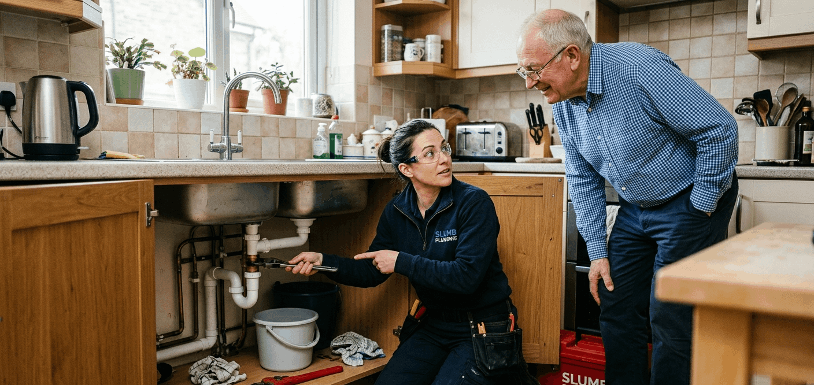

Offline Website Maker
Keeping a client is almost always cheaper than finding a new one. The effort, the time, and the cost that goes into bringing a new customer through the door, being found online, making a good first impression, winning the job over someone else, is significant. A client you already have has already done all of that. They know you, they trust you, and if their experience with you has been good they are far more likely to call you again and recommend you to someone else than a stranger who has never heard of you.
So before thinking about how to get more work, it is worth thinking about how to keep the work you already have.
The first thing a client notices is how easy you are to reach. Research consistently shows that callers make a judgement about a business within the first 20 to 25 seconds of waiting. After that window, attention drops and the likelihood of them hanging up and calling someone else increases significantly. A dedicated business number with a professional hold message that confirms they have called the right place extends that window and keeps them on the line while you get to them.
The same principle applies to email. Aiming to respond to every client email within one business day is not just good manners, it signals that the person on the other end is attentive and organised. A client who sends a question and hears nothing for three days starts to wonder whether their job matters to you. A client who gets a reply the same day or the next morning feels looked after, and that feeling is what makes them call you again the next time something needs doing.
One of the most common reasons a client becomes unhappy is not because something went wrong, it is because they did not know what was happening. A plumber who disappears for two days mid-job without a word leaves a homeowner anxious and uncertain even if the work itself is perfectly fine. Regular updates change that entirely.
A quick photo sent at the end of the day showing progress, a short message confirming what is happening tomorrow, a check-in call halfway through a bigger job, these things cost very little time and they make an enormous difference to how the client experiences the project. They feel involved, informed, and in control, which is exactly what someone who has let a tradesperson into their home wants to feel.
For larger jobs or more complex discussions, a video call using Microsoft Teams or Google Meet takes this further. You can sit face to face with the client without either of you having to travel anywhere, share your screen to walk through plans or quotes, show exactly what you are proposing and why, and give them the opportunity to ask questions and suggest changes in real time. A client who has been shown the reasoning behind a decision is far less likely to question it later, and far more likely to feel that they were treated as a partner in the project rather than just a source of payment.
No business gets everything right every time. The difference between a client who leaves and never comes back and a client who becomes more loyal after a problem is almost entirely determined by how the problem is handled.
Dismissing a complaint, making excuses, or going quiet when something goes wrong are the fastest ways to lose a client permanently. Acknowledging the problem openly, apologising genuinely, and offering something meaningful to make it right does the opposite. A client who felt wronged and then saw you respond fairly and without defensiveness is more likely to recommend you to a friend than a client who never had a problem at all, because they have seen what you are made of when things get difficult and they liked what they saw.
There is also a practical financial argument for handling complaints generously. The cost of offering a discount, a free return visit, or a partial refund on a job that went wrong is almost always lower than the cost of replacing that client entirely. You keep the relationship, you keep the future work, and you keep the referrals that client might send your way. Pinching pennies on an apology and losing a client costs far more in the long run than the gesture you were reluctant to make.
A mistake many businesses make is focusing all of their promotional energy on new clients, discounts for first jobs, introductory offers, special rates for new enquiries, while their existing loyal clients receive nothing. Those existing clients are your most valuable asset. They already trust you, they already know your work, and they are already predisposed to call you again. Neglecting them in favour of chasing new business is the wrong priority.
Technology makes it straightforward to reward loyalty in ways that feel personal rather than corporate. A discount after a certain number of jobs, an exclusive offer sent to existing clients before it goes public, a blog post on your website about a job you did for them, with their permission,that tells the story of what the problem was, how you solved it, and what the result looked like. That last one does double duty. It gives the existing client recognition and a reason to feel valued, and it gives new visitors to your website a real, specific example of your work and your problem solving in action. You could even offer the client a small incentive, a discount on their next job, in exchange for letting you write it up. Everyone benefits.
The clients who keep coming back are the foundation of a sustainable plumbing business. Technology does not replace the relationship, but it makes it significantly easier to maintain.
Line Ware are business voice, web, and email specialists for small trade businesses.
Started in March 2026, we have the knowledge and the expertise to help your small trade business grow.
We are making strides in the Managed Service Provider industry.
We know that every business is different, so why not take your business to the next level? Get your first 2 months for only £100 total, with free setup, fast execution, and the ability to cancel anytime. Website, Email & Basic Phone worth £800
Give our friendly team a call for free on 0808 520 6446
Offline Website Maker